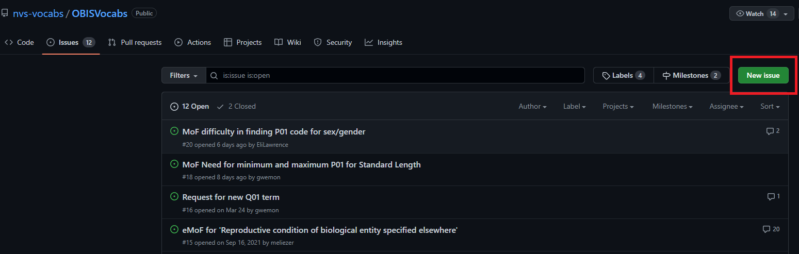
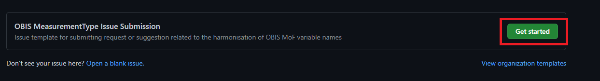
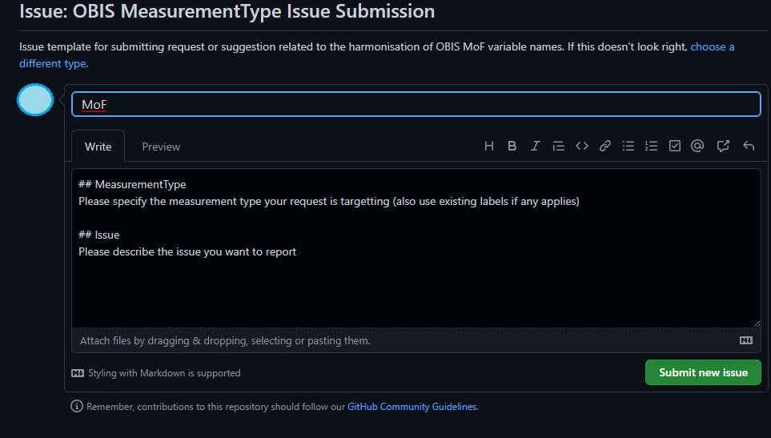
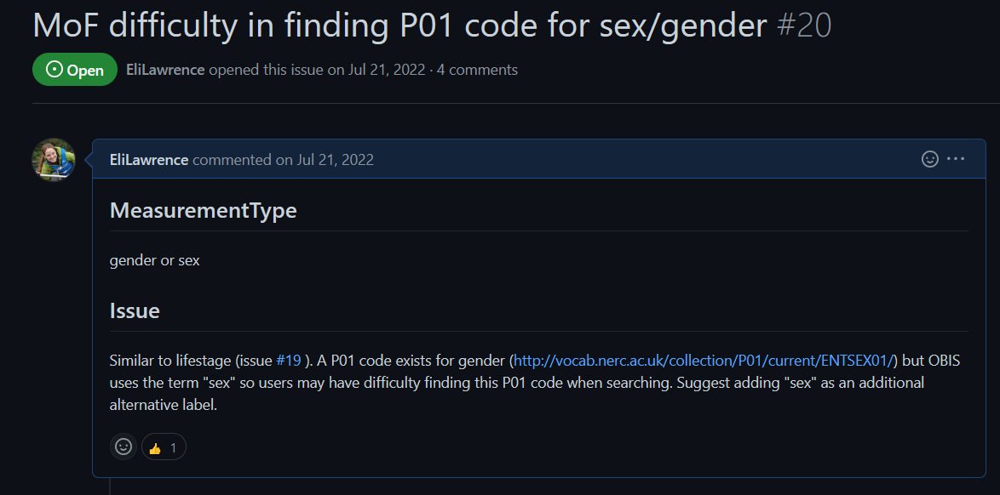

4.7 Choosing Vocabularies for your dataset
4.7.1 Map your data with DwC vocabulary
There are many possible ways of setting up your datasheets, and if you are new to OBIS you likely did not use controlled Darwin Core (DwC) or BODC vocabulary before samples were collected. In mapping your data fields to DwC we recommend documenting your choices so you have a reference to go back to should the need arise. In such a document you should take notes on the choices you made, as well as any actions you had to take (e.g. separate one column into many, convert dates or coordinates, etc.).
For example, a DwC mapping reference table could look like the following: | Verbatim field name | Mapped DwC term | Actions taken | Notes | |——-|——-|————|————–| | date | eventDate | convert dates to ISO | | | coordinates| decimalLongitude, decimalLatitude | convert ddmmss to decimal degrees, separated one column into 2 for longitude and latitude | put original coordinates into verbatimCoordinates |
In order to help you map your data to DwC terms, we have provided the table below which outlines some common data fields, their associated Darwin Core vocabulary, and which data table the field is likely to go in:
| Common Raw Terms | DwC Field | Data table |
|---|---|---|
| Date, Time | eventDate | Event, Occurrence |
| Species, g_s, taxa | scientificName | Occurrence |
| Any biotic/abiotic measurements* | measurementType, measurementValue, measurementUnit* | eMoF |
| Depth | maximumDepthInMeters or minimumDepthInMeters | Event, Occurrence |
| Lat/Latitude, Lon/Long/Longitude, dd | decimalLatitude, decimalLongitude | Event, Occurrence |
| Sampling method | samplingProtocol | eMoF |
| Sample size, N, #, No. | sampleSizeValue | eMoF |
| Location | locality | Event |
| Presence, absence | occurrenceStatus | Occurrence |
| Type of record/ specimen | basisofRecord | Occurrence |
| Person/ people that recorded the original Occurrence | recordedBy | Occurrence |
| OrcID of person/ people that recorded the original Occurrence | recordedByID | Occurrence |
| Person/ people that identified the organism | identifiedBy | Occurrence |
| OrcID of person/ people that identified the organism | identifiedByID | Occurrence |
| Data collector, data creator | recordedBy | Event, Occurrence |
| Taxonomist, identifier | identifiedBy | Occurrence |
| Record number, sample number, observation number | occurrenceID (either ID or incorporated into ID) | Occurrence |
Note that mapping abiotic/biotic measurement fields (sex, temperature, abundance, lengths, etc.) will occur within the extendedMeasurementOrFact extension. Here this data will go from being a separate column to being condensed into the measurementType and measurementValue fields.
The obistools R package also has the map_fields function that you can use to map your dataset fields to a DwC term.
4.8 How to correctly map eMoF terms to preferred BODC vocabulary
4.8.1 MeasurementOrFact vocabularies
The MeasurementOrFact terms measurementType, measurementValue, and measurementUnit are completely unconstrained and can be populated with free text. While free text offers the advantage of capturing complex and as yet unclassified information, the inevitable semantic heterogeneity (e.g., of spelling or wording) becomes a major challenge for effective data integration and analysis. For example, if you were interested in finding all records related to length measurements, you would have to try to account for all the different ways “length” was recorded by data providers (length, Length, len, fork length, etc.).
Hence, OBIS added 3 new terms: measurementTypeID, measurementValueID and measurementUnitID to standardize the measurement types, values and units. Note however measurementValueID is not used for standardizing numeric measurements.
These three new terms should be populated using controlled vocabularies referenced using Unique Resource Identifiers (URIs). OBIS recommends using the internationally recognized NERC Vocabulary Server, developed by the British Oceanographic Data Centre (BODC), which can be searched through https://www.bodc.ac.uk/resources/vocabularies/vocabulary_search/. Such controlled vocabulary is incredibly important to ensure datasets in OBIS will be interoperable - readable by both humans and machines. In this way, you could search for a single measurementTypeID and obtain all related records, regardless of differences in wording.
We provide some specific guidance for these URI fields below.
4.8.1.1 measurementTypeID
Important note! P01 codes are required for the
measurementTypeIDfield.
You can use codes from other collections (e.g. P06, Q01) for measurementValueID and measurementUnitID fields, but for measurementTypeID you must always use a code from the P01 collection. The BODC has a Vocabulary Builder that we recommend using to assist you in selecting a P01 code.
4.8.1.1.1 Selecting P01 codes for measurementTypeID
P01 codes are concepts that are constructed from several associated elements (see P01 wheel) in order to describe a measurement type. It is important to understand that each element within a P01 code is meant to describe an aspect of the measurement: what is the measurement, what is the object being measured, where was the measurement taken, in what environment, by what kind of methods? By taking together all these elements, we are able to have a unique and specific description to differentiate one measurement from another. To further understand the P01 code and the semantic model it is based on, you can read documentation here.
The P01 collection is found here and can be searched through the NERC vocabulary server.
You may notice when searching for measurement types related to an occurrence that specific taxonomic codes are available to you, e.g., abundance of Notommata. For OBIS, all P01 codes should be generalized - i.e. do not select species-specific codes. Instead only choose codes for “biological entities specified elsewhere”.
To assist you in selecting the correct P01 code, we worked with BODC to develop decision trees. These decision trees will help you identify each element that makes up a P01 code, and will help you understand the uniqueness of your data measurement (e.g. to differentiate abundance per unit area of the bed vs per unit volume of the water body). Any individual element may be found within different vocabulary collections, but taking them all together will point you to a P01 code that most accurately represents your measurement type.
General guidelines for understanding the different elements that make up a measurementType are found below. Note that although we point to different vocabulary collections, you do not necessarily need to search these collections. We recommend using the following guides along with the NERC vocabulary builder to find P01 codes.
- First identify what property is being measured. Is it an abundance, temperature measurement, length, concentration? You can identify this element in the S06 collection.
- Determine if the measurement is statistically derived - is it a mean, a minimum, maximum, variation? These can be found in the S07 collection
- What are the units of the measurement? P06
- What is the object of interest?
- For most measurements documented in OBIS, this will be “biological entity specified elsewhere” (not a specific species), a sub-group (S13) or a sub-component (S12). However it could be a chemical (S27) or physical object or a physical phenomenon (S18-S20). Sometimes the environmental matrix itself is the object of interest (e.g. pH of water body, atmospheric temperature).
- What is the relationship of the object to the environmental matrix? (S02) Is it per unit weight, unit volume, in, etc.?
- What is the environmental matrix? (S21 or S23) Is there a sub-component of the matrix? (S22 or S24) This is a vitally important element in order to resolve ambiguity.
- Was the measurement taken from the sediment, from the water? Was a filter used? If the sample was filtered, the type and size is additional information that should be captured in the matrix definition. S22 or S24 contain the concepts for filtered samples.
- What method was used to obtain the measurement? This is different from the sampling methods as mentioned in Step 5. This element refers to any methods applied after the measurement was taken such as sample preparation (S03), analysis (S04), or data processing (S05). A good example would be the validation and standardization of chlorophyll-a concentration measurements.
4.8.1.1.2 Common P01 Vocabularies
We have provided a list of commonly used measurementTypes and associated P01 codes. However, it is extremely important to note the following before selecting a code:
WARNING: DO NOT USE A VOCABULARY CODE UNLESS YOU ARE CERTAIN IT MATCHES YOUR DATA
In some cases there are multiple potential P01 codes associated with a measurementType. Be sure to choose carefully. It is better to leave the field blank and return to it later than to use an incorrect vocabulary.
| measurementType | Object of interest | suggested measurementTypeID P01 code(s) |
|---|---|---|
| sex | Biological entity specified elsewhere | http://vocab.nerc.ac.uk/collection/P01/current/ENTSEX01/ |
| Life stage | Biological entity specified elsewhere | http://vocab.nerc.ac.uk/collection/P01/current/LSTAGE01/ |
| Length | Biological entity specified elsewhere | list |
| Water temperature | http://vocab.nerc.ac.uk/collection/P01/current/TEMPPR01/ OR see list | |
| Salinity | http://vocab.nerc.ac.uk/collection/P01/current/TEMPPR01/ OR see list for specific methods | |
| Length of sample track | Sampling track | http://vocab.nerc.ac.uk/collection/P01/current/LENTRACK/ |
For OBIS sampling instruments and methods attributes, see the Q01 collection:
4.8.1.2 measurementValueID
The measurementValueID field provides an identifying code for measurementValues that are non-numerical (e.g., sampling related, sex or life stage designation, etc.). It is not used for standardizing numeric measurements.
See examples:
- Sampling instruments and sensors (SeaVoX Device Catalogue)
- documentation: https://github.com/nvs-vocabs/L22
- vocabulary: http://vocab.nerc.ac.uk/collection/L22/current
- search: https://www.bodc.ac.uk/resources/vocabularies/vocabulary_search/L22/
- Sampling instrument categories (SeaDataNet device categories)
- documentation: https://github.com/nvs-vocabs/L05
- vocabulary: http://vocab.nerc.ac.uk/collection/L05/current
- search: https://www.bodc.ac.uk/resources/vocabularies/vocabulary_search/L05/
- Vessels (ICES Platform Codes)
- Sex (Gender)
- documentation: https://github.com/nvs-vocabs/S10
- vocabulary: http://vocab.nerc.ac.uk/collection/S10/current/
- search: https://www.bodc.ac.uk/resources/vocabularies/vocabulary_search/S10/
- Lifestage
- documentation: https://github.com/nvs-vocabs/S11
- vocabulary: http://vocab.nerc.ac.uk/collection/S11/current/
- search: https://www.bodc.ac.uk/resources/vocabularies/vocabulary_search/S11/
- Papers or manuals on the sampling protocol used
- DOI
- Handle for publications on IOC’s Ocean Best Practices repository, for example: http://hdl.handle.net/11329/304
4.8.1.3 MeasurementUnitID
The measurementUnitID field is used to provide a URI for specific units. You should populate this field with codes from the P06 collection.
Some relevant links for this field include:
- Documentation: https://github.com/nvs-vocabs/P06
- Vocabulary list: http://vocab.nerc.ac.uk/collection/P06/current
- Search list: https://www.bodc.ac.uk/resources/vocabularies/vocabulary_search/P06/
4.8.2 Requesting new vocabulary terms
If you have already tried looking for a P01 code and were unable to identify a suitable code for your measurementType you must then request a code to be created. To do this, your request must be submitted via:
- Submit request through the OBIS Vocabulary GitHub repository (https://github.com/nvs-vocabs/OBISVocabs/issues)
- Requests can also be emailed to vocab.services@bodc.ac.uk if you cannot access GitHub
- Registration with the BODC Vocabulary Builder
- Note: these requests should be based on combinations of existing concepts
4.8.2.1 How to Submit a GitHub Vocabulary Request
Navigate to https://github.com/nvs-vocabs/OBISVocabs/issues and click on the New Issue button. 
Click Get started 
Fill in the title with short details of your request or issue. Then fill in the description. It is recommended to list any existing terms that are similar to your request, or concepts that are sub-components of the request. 
Example: An issue was created to address difficulties in identifying P01 codes for sex rather than gender. Gender is a concept generally applied to humans, whereas “sex” is more applicable for animals. Thus the request was to either modify the current gender P01 code, or create a P01 code that specifies sex, not gender. At the time the request was issued, when users searched for a P01 term for “sex”, only species-specific terms were available. 